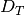

4.5. A Simple Empirical Analysis¶
In this section, we will walk through an example of how to run an analysis using PyMsBayes. In this tutorial, I will assume that you have successfully installed PyMsBayes, and read the following sections:
I will also assume you have downloaded the example data.
We will continue with the example that was introduced in the background section: Three lizard species co-distributed across a putative dispersal barrier that was formed by a past geological event.
4.5.1. The data files¶
We will start with a properly formatted configuration file and sequence alignments for each species. These can be found in the pymsbayes-tutorial-data/lizards/configs and pymsbayes-tutorial-data/lizards/sequences directories, respectively, within the tutorial data you downloaded. For information about how the configuration file and sequence files need to be formatted, please see the section on the configuration file.
4.5.1.1. Converting from IM files¶
Also, both msBayes and dpp-msbayes come with a Perl script called convertIM.pl, which takes sequence files formatted for the popular program IM, and creates the configuration file and sequence files needed for msBayes. You might want to use this script if you are starting with IM files. After you run the convertIM.pl you will have to update the preamble of the configuration file to specify the priors for the dpp-msbayes model. See the sections about selecting priors and the configuration file for details about how to modify the preamble.
4.5.1.2. The configuration file¶
Ok, let’s take a look at our configuration file pymsbayes-tutorial-data/lizards/configs/dpp-simple.cfg:
concentrationShape = 1000.0
concentrationScale = 0.00437
thetaShape = 4.0
thetaScale = 0.001
ancestralThetaShape = 0
ancestralThetaScale = 0
thetaParameters = 000
tauShape = 1.0
tauScale = 0.02
timeInSubsPerSite = 1
bottleProportionShapeA = 0
bottleProportionShapeB = 0
bottleProportionShared = 0
migrationShape = 0
migrationScale = 0
numTauClasses = 0
BEGIN SAMPLE_TBL
species-1 locus-1 1.0 1.0 10 8 32.422050 389 0.271215 0.240174 0.266343 ../sequences/species-1-locus-1.fasta
species-1 locus-2 1.0 1.0 8 6 5.507905 500 0.254861 0.225477 0.246877 ../sequences/species-1-locus-2.fasta
species-1 locus-3 1.0 1.0 6 8 8.379708 524 0.260506 0.233269 0.266142 ../sequences/species-1-locus-3.fasta
species-1 locus-4 1.0 1.0 8 10 5.204980 345 0.251830 0.232765 0.249506 ../sequences/species-1-locus-4.fasta
species-1 locus-5 1.0 1.0 8 8 29.592792 417 0.272341 0.237232 0.210548 ../sequences/species-1-locus-5.fasta
species-1 locus-mt 0.25 4.0 5 5 8.153262 600 0.222976 0.242721 0.271977 ../sequences/species-1-locus-mt.fasta
species-2 locus-1 1.0 1.0 6 10 7.536519 400 0.256404 0.246540 0.266092 ../sequences/species-2-locus-1.fasta
species-2 locus-3 1.0 1.0 10 8 11.148510 550 0.270202 0.229906 0.249895 ../sequences/species-2-locus-3.fasta
species-2 locus-4 1.0 1.0 8 8 9.391906 350 0.246659 0.242283 0.237685 ../sequences/species-2-locus-4.fasta
species-2 locus-5 1.0 1.0 10 10 13.327843 450 0.264189 0.240497 0.227266 ../sequences/species-2-locus-5.fasta
species-2 locus-mt 0.25 4.0 4 5 7.595008 549 0.233664 0.264141 0.234924 ../sequences/species-2-locus-mt.fasta
species-3 locus-1 1.0 1.0 10 6 17.035406 367 0.258149 0.231107 0.276950 ../sequences/species-3-locus-1.fasta
species-3 locus-3 1.0 1.0 8 10 59.177467 541 0.262631 0.225555 0.251191 ../sequences/species-3-locus-3.fasta
species-3 locus-4 1.0 1.0 6 8 6.901196 333 0.287292 0.230559 0.215738 ../sequences/species-3-locus-4.fasta
species-3 locus-mt 0.25 4.0 5 4 11.423634 587 0.227487 0.222071 0.259081 ../sequences/species-3-locus-mt.fasta
END SAMPLE_TBL
From the sample table, we see that we have 3 species and 6 loci. For “species-2,” we are missing “locus-2,” and for “species-3,” we are missing “locus-2” and “locus-5”. In the preamble, we specify our parameterization and priors for the dpp-msbayes model. We are specifying a relatively “simple” model; there is no migration, no population bottlenecks, and only one population-size parameter (theta) per species.
4.5.2. The primary analysis program dmc.py¶
The main program for running analyses with PyMsBayes is dmc.py (the mnemonic here is divergence-model choice). We can take a look at the help menu for dmc.py by entering the following command line:
$ dmc.py -h
Which should print the following help menu to the terminal:
usage: dmc.py [-h] -o OBSERVED_CONFIGS [OBSERVED_CONFIGS ...] -p PRIOR_CONFIGS
[PRIOR_CONFIGS ...] [-r REPS] [-n NUM_PRIOR_SAMPLES]
[--prior-batch-size PRIOR_BATCH_SIZE] [--generate-samples-only]
[--num-posterior-samples NUM_POSTERIOR_SAMPLES]
[--num-standardizing-samples NUM_STANDARDIZING_SAMPLES]
[--np NP] [--output-dir OUTPUT_DIR] [--temp-dir TEMP_DIR]
[--staging-dir STAGING_DIR]
[-s [STAT_PREFIXES [STAT_PREFIXES ...]]] [-b BANDWIDTH]
[-q NUM_POSTERIOR_QUANTILES]
[--reporting-frequency REPORTING_FREQUENCY]
[--sort-index {0,1,2,3,4,5,6,7,8,9,10,11}]
[--no-global-estimate] [--compress] [--keep-temps] [--seed SEED]
[--output-prefix OUTPUT_PREFIX] [--data-key-path DATA_KEY_PATH]
[--start-from-simulation-index START_FROM_SIMULATION_INDEX]
[--start-from-observed-index START_FROM_OBSERVED_INDEX]
[--dry-run] [--version] [--quiet] [--debug]
main_dmc.py Version 0.2.4
optional arguments:
-h, --help show this help message and exit
-o OBSERVED_CONFIGS [OBSERVED_CONFIGS ...], --observed-configs OBSERVED_CONFIGS [OBSERVED_CONFIGS ...]
One or more msBayes config files to be used to either
calculate or simulate observed summary statistics. If
used in combination with `-r` each config will be used
to simulate pseudo-observed data. If analyzing real
data, do not use the `-r` option, and the fasta files
specified within the config must exist and contain the
sequence data.
-p PRIOR_CONFIGS [PRIOR_CONFIGS ...], --prior-configs PRIOR_CONFIGS [PRIOR_CONFIGS ...]
One or more config files to be used to generate prior
samples. If more than one config is specified, they
should be separated by spaces. This option can also be
used to specify the path to a directory containing the
prior samples and summary statistic means and standard
deviations generated by a previous run using the
`generate-samples-only` option. These files should be
found in the directory `pymsbayes-output/prior-stats-
summaries`. The`pymsbayes-output/model-key.txt` also
needs to be present. If specifying this directory, it
should be the only argument (i.e., no other
directories or config files can be provided).
-r REPS, --reps REPS This option has two effects. First, it signifies that
the analysis will be simulation based (i.e., no real
data will be used). Second, it specifies how many
simulation replicates to perform (i.e., how many data
sets to simulate and analyze).
-n NUM_PRIOR_SAMPLES, --num-prior-samples NUM_PRIOR_SAMPLES
The number of prior samples to simulate for each prior
config specified with `-p`.
--prior-batch-size PRIOR_BATCH_SIZE
The number of prior samples to simulate for each
batch.
--generate-samples-only
Only generate samples from models as requested. I.e.,
No analyses are performed to approximate posteriors.
This option can be useful if you want the prior
samples for other purposes.
--num-posterior-samples NUM_POSTERIOR_SAMPLES
The number of posterior samples desired for each
analysis. Default: 1000.
--num-standardizing-samples NUM_STANDARDIZING_SAMPLES
The number of prior samples desired to use for
standardizing statistics. Default: 10000.
--np NP The maximum number of processes to run in parallel.
The default is the number of CPUs available on the
machine.
--output-dir OUTPUT_DIR
The directory in which all output files will be
written. The default is to use the directory of the
first observed config file.
--temp-dir TEMP_DIR A directory to temporarily stage files. The default is
to use the output directory.
--staging-dir STAGING_DIR
A directory to temporarily stage prior files. This
option can be useful on clusters to speed up I/O while
generating prior samples. You can designate a local
temp directory on a compute node to avoid constant
writing to a shared drive. The default is to use the
`temp-dir`.
-s [STAT_PREFIXES [STAT_PREFIXES ...]], --stat-prefixes [STAT_PREFIXES [STAT_PREFIXES ...]]
Prefixes of summary statistics to use in the analyses.
The prefixes should be separated by spaces. Default:
`-s pi wattTheta pi.net tajD.denom`.
-b BANDWIDTH, --bandwidth BANDWIDTH
Smoothing parameter for the posterior kernal density
estimation. This option is used for the `glm`
regression method. The default is 2 / `num-posterior-
samples`.
-q NUM_POSTERIOR_QUANTILES, --num-posterior-quantiles NUM_POSTERIOR_QUANTILES
The number of equally spaced quantiles at which to
evaluate the GLM-estimated posterior density. Default:
1000.
--reporting-frequency REPORTING_FREQUENCY
Suggested frequency (in number of prior samples) for
running regression and reporting current results.
Default: 0 (only report final results). If a value is
given, it may be adjusted so that the reporting
frequency is a multiple of the multi-processed batch
size.
--sort-index {0,1,2,3,4,5,6,7,8,9,10,11}
The sorting index used by
`dpp-msbayes.pl`/`msbayes.pl` and `obsSumStats.pl`
scripts to determine how the summary statistic vectors
calculated from the alignments of the observed and
simulated data are to be grouped and sorted.
The default is 0.
0: Do not group or sort. The identity and order of
the summary statistics of each alignment are
maintained and compared when calculating
Euclidean distance.
1-7: **NOTE**, options 1-7 all re-sort the summary
statistics in some way, and thus compare the
statistics from *different* alignments when
calculating the Euclidean distance. This is not
valid and these options should *NOT* be used.
They are maintained for backwards compatibility
with the original msBayes.
8-11: All of these options group the summary
statistics from multiple loci by taxon and then
calculate moments of each statistic across the
loci for each taxon, and then use these moments
to calculate Euclidean distance. The order of
the taxa is maintained, and so this is valid,
but you are losing a lot of information
contained in your loci by simply taking the mean
(option 11) across them. If you have A LOT of
loci, this sacrifice might be necessary to
reduce the number of summary statistics.
**NOTE**, options 8-10 are NOT well tested.
8: Use the first 4 moments (mean, variance,
skewness, and kurtosis) of each statistic.
9: Use the first 3 moments (mean, variance,
and skewness) of each statistic.
10: Use the first 2 moments (mean and variance)
of each statistic.
11: Use the first 1 moment (mean) of each
statistic.
--no-global-estimate If multiple prior models are specified, by default a
global estimate is performed averaging over all
models. This option prevents the global estimation
(i.e., only inferences for each model are made).
--compress Compress large results files.
--keep-temps Keep all temporary files.
--seed SEED Random number seed to use for the analysis.
--output-prefix OUTPUT_PREFIX
Prefix to use at beginning of output files. The
default is no prefix.
--data-key-path DATA_KEY_PATH
The path to a `data-key.txt` file generated by a
previous run. This file should be found in the
directory `pymsbayes-output/data-key.txt`. This option
will override the `-o`/`--observed-configs` option,
and is intended to be used in combination with the
`--start-from` option to restart an analysis.
--start-from-simulation-index START_FROM_SIMULATION_INDEX
The simulation index at which to begin analyses. Must
be used in combination with either the number of
simulation replicates (`-r`/`--reps`) or the `--data-
key-path` option, and must be a positive integer that
is less than the number of simulation replicates. This
option can be useful if an analysis needs to be
restarted.
--start-from-observed-index START_FROM_OBSERVED_INDEX
The observed config index at which to begin analyses.
Can be used in combination with the `--data-key-path`
option to restart long-running, multi-observed-config
analyses
--dry-run Do not run analyses; only process settings
--version Report version and exit.
--quiet Run without verbose messaging.
--debug Run in debugging mode.
If the help menu is not printed to the terminal, PyMsBayes may not be installed correctly; please see the installation section.
4.5.2.1. Running a (very) short example analysis¶
If you are in the directory with the example configuration files (pymsbayes-tutorial-data/lizards/configs), we can run an example analysis by entering the following command:
$ dmc.py -o dpp-simple.cfg -p dpp-simple.cfg -n 5000
This should take a few minutes or less to run on a modern laptop. Let’s look at what each option is doing:
- -o dpp-simple.cfg
- Tells the program to use the sequence alignments specified in the dpp-simple.cfg configuration file to calculate the observed summary statistics.
- -p dpp-simple.cfg
- Tells the program to use the model specified in the dpp-simple.cfg file as the prior.
- -n 5000
- Tells the program to simulate 5000 datasets under the prior specified in dpp-simple.cfg (i.e. “get 5000 samples from the prior”).
By default, dmc.py will retain the “best” 1000 simulations as the approximate posterior sample (use the --num-posterior-samples option to adjust this); i.e., the parameter values associated with the 1000 simulated datasets that yield summary statistics most similar to the observed summary statistics (see the section on the ABC algorithm for more details). A sample of 5000 simulations from the prior is far too small for a meaningful approximation of the posterior, but it will allow you to perform a successful (hopefully!) analysis and see some output in a short amount of time.
That’s it! dmc.py does the full analysis for you: It calculates the observed summary statistics, simulates datasets from the prior and calculates summary statistics from them, performs rejection to get the approximate posterior sample, and performs a post-hoc regression-adjusted of the posterior sample (using ABCtoolbox). It also spreads all this work over multiple processors (dmc.py uses all the processors on your computer by default; use the --np option to control the number of processes).
4.5.2.2. The output¶
Let’s take a look at the output generated by the (very) short analysis we ran above. There should be a new directory named pymsbayes-results that was created when you ran the analysis. This directory contains all of the results organized in a rather convoluted hierarchy of folders and files.
4.5.2.2.1. The info file¶
One file inside the result directory is pymsbayes-results/pymsbayes.info.txt, which looks something like:
[pymsbayes]
version = Version 0.2.4
output_directory = /home/jamie/software/dev/PyMsBayes/examples/lizards/configs/pymsbayes-results
temp_directory = /home/jamie/software/dev/PyMsBayes/examples/lizards/configs/pymsbayes-results/temp-files-LkLsum
sort_index = 0
simulation_reps = 0
seed = 922800765
num_processors = 4
num_prior_samples = 5000
num_standardizing_samples = 5000
bandwidth = 0.002
posterior_quantiles = 1000
posterior_sample_size = 1000
stat_patterns = ^\s*pi\.\d+\s*$, ^\s*wattTheta\.\d+\s*$, ^\s*pi\.net\.\d+\s*$, ^\s*tajD\.denom\.\d+\s*$
num_taxon_pairs = 3
dry_run = False
[[tool_paths]]
dpp_msbayes = /home/jamie/software/dev/PyMsBayes/bin/linux/dpp-msbayes.pl
msbayes = /home/jamie/software/dev/PyMsBayes/bin/linux/msbayes.pl
eureject = /home/jamie/software/dev/PyMsBayes/bin/linux/eureject
abcestimator = /home/jamie/software/dev/PyMsBayes/bin/linux/ABCestimator
[[observed_configs]]
1 = ../dpp-simple.cfg
[[observed_paths]]
1 = observed-summary-stats/observed-1.txt
[[prior_configs]]
1 = ../dpp-simple.cfg
[[run_stats]]
start_time = 2015-02-05 12:36:44.292840
stop_time = 2015-02-05 12:37:23.341727
total_duration = 0:00:39.048887
This file is useful, because it contains:
- The settings that were used for the analysis.
- The paths to the external tools that were used for the analysis.
- A key for all of the observed and prior configuration files specified in the analysis (only one file for this simple example).
- And some run statistics.
4.5.2.2.2. The observed summary statistics¶
The result directory also contains the pymsbayes-results/observed-summary-stats, which contains the observed summary statistics calculated from the datasets specified in all of the observed configuration files. Because there was only one observed configuration file in our simple analysis (i.e., -o dpp-simple.cfg), there is only a single file, pymsbayes-results/observed-summary-stats/observed-1.txt; The 1 in the file name corresponds to the key in the pymsbayes-results/pymsbayes.info.txt file (this is useful in more complicated analyses).
4.5.2.2.3. The data and model keys and corresponding directories¶
The “meat” of the results lies within the pymsbayes-results/pymsbayes-output directory. Inside this directory, we see two “key” files. data-key.txt, which contains:
d1 = ../observed-summary-stats/observed-1.txt
and model-key.txt, which contains:
m1 = ../../dpp-simple.cfg
These are keys to the subdirectories within the pymsbayes-results/pymsbayes-output directory. For example, from these keys, we know that the pymsbayes-results/pymsbayes-output/d1/m1 directory will contain the results of observed summary statistics observed-1.txt analyzed under the dpp-simple.cfg model.
This system of keys and nested directories may seem unnecessarily confusing, and is certainly overkill for a simple analysis under a single model, However, this system is actually very nice when running complicated, simulation-based analyses with many data models, each with 1000s of simulated datasets, all analysed under many analysis models.
4.5.2.2.4. The results files¶
For this section, it might be helpful to checkout the detailed key for the parameters included in the output, to get familiar with the syntax of the output.
Within the pymsbayes-results/pymsbayes-output/d1/m1 directory you will find the following results files:
- d1-m1-s1-5000-cv-results.txt
- d1-m1-s1-5000-div-model-results.txt
- d1-m1-s1-5000-glm-posterior-density-estimates.txt
- d1-m1-s1-5000-glm-posterior-summary.txt
- d1-m1-s1-5000-model-results.txt
- d1-m1-s1-5000-omega-results.txt
- d1-m1-s1-5000-posterior-sample.txt
- d1-m1-s1-5000-posterior-summary.txt
- d1-m1-s1-5000-psi-results.txt
Let’s break down the information in the files’ prefix d1-m1-s1-5000:
- d1
- This tells us these results are from the “d1” observed data (observed-1.txt according to data-key.txt).
- m1
- This tells us the observed data were analyzed under the “m1” model (dpp-simple.cfg according to model-key.txt).
- s1
- This tells us these results are from simulation replicate 1 (“s1”). We analyzed “real” empirical data (there were no simulated datasets), and “s1” here is not very meaningful. However, when we perform simulation-based analyses with thousands of simulated observed datasets(e.g., power analyses), the “s#” part of the file name corresponds to each simulation replicate.
- 5000
- This tells us the results are based on 5000 random samples from the prior.
Ok, now let’s look at what is in each file:
- posterior-sample.txt
- The approximate posterior sample. The parameter values, parameter summaries, and associated summary statitics of the samples from the prior that were closest to the observed summary statistics.
- posterior-summary.txt
- Various summaries (mean, median, mode, range, etc.) of the parameter estimates (summarized from the posterior samples in posterior-sample.txt).
- glm-posterior-density-estimates.txt
- The GLM-adjusted posterior density estimates of several parameters and parameter summaries. This is the output of ABCtoolbox.
- glm-posterior-summary.txt
- A summary (mean, median, mode, etc) of the GLM-adjusted posterior density estimates from the glm-posterior-density-estimates.txt file. This is output of ABCtoolbox.
- psi-results.txt
- The approximate posterior probabilities of the number of divergence events shared across the taxa.
- div-model-results.txt
- The approximate posterior probabilities of the model of divergence. The first column shows the assignment of taxon pairs to divergence-time parameters. For example, if we have 3 taxa, 0, 1, 2 is the most general model in which all three taxa have their own divergence-time parameter. 0, 1, 0 indicates that the first and third taxon share the same divergence time-parameter, and the second taxon has its own divergence-time parameter. The order of the taxa in the models is the same as the order they appear in the sample table of the configuration file. The second column is the approximate posterior probability of the divergence model. The third column is the GLM-regression-adjusted posterior probability of the divergence model. NOTE, [10], [9], and [8] showed that the unadjusted posterior estimate was much more accurate than estimates adjusted via GLM or multinomial logistic regression. The last column shows the divergence model (as in the first column) annotated with conditional divergence-time estimates (i.e., divergence-time estimates conditional on the divergence model).
- omega-results.txt
- In the original msBayes “omega” is used to denote the dispersion index (variance / mean) of the divergence times across the pairs of populations. omega is NOT a parameter of either the msBayes or dpp-msbayes model. Rather, it is a statistic summarizing the variance in divergences across taxa. This is calculated for every posterior sample, and this file tells us the proportion of those posterior samples that has a dispersion index of divergence times less than some arbitrary threshold (0.01 by default). This is an estimate of the posterior probability that the dispersion index is less than the threshold. It also reports the GLM-regression-adjusted posterior probability the dispersion index is smaller than the threshold. However, [10], [9], and [8] showed that the unadjusted posterior estimate was much more accurate than estimates adjusted via GLM or multinomial logistic regression.
- cv-results.txt
- Similar to the omega-results.txt file, but containing the results for the coefficient of variation (standard deviation / mean) of the divergence times across the pairs of populations. The coefficient of variation is unitless, and thus comparable across analyses and across time scales, unlike the dispersion index.
- model-results.txt
- The posterior probability of the prior models. Because we only analyzed the data under a single model, this result is not meaningful in this example.
4.5.3. Plotting the results¶
If you have matplotlib installed on your computer, you can also plot the results of the analysis using the dmc_plot_results.py program. Let’s take a look at the help menu:
$ dmc_plot_results.py -h
usage: dmc_plot_results.py [-h] [-n NUM_PRIOR_SAMPLES] [-i SAMPLE_INDEX]
[-o OUTPUT_DIR] [--np NP] [-m MU] [--seed SEED]
[--version] [--quiet] [--debug]
PYMSBAYES-INFO-FILE
dmc_plot_results.py Version 0.1.1
positional arguments:
PYMSBAYES-INFO-FILE Path to pymsbayes-info.txt file.
optional arguments:
-h, --help show this help message and exit
-n NUM_PRIOR_SAMPLES, --num-prior-samples NUM_PRIOR_SAMPLES
The number of prior samples to simulate for estimating
prior probabilities.
-i SAMPLE_INDEX, --sample-index SAMPLE_INDEX
The prior-sample index of results to be summarized.
Output files should have a consistent schema. For
example, a results file for divergence models might
look something like d1-m1-s1-1000000-div-model-
results.txt. In this example, the prior-sample index
is "1000000". The default is to use the largest prior-
sample index, which is probably what you want.
-o OUTPUT_DIR, --output-dir OUTPUT_DIR
The directory in which all output plots will be
written. The default is to use the directory of the
pymsbayes info file.
--np NP The maximum number of processes to run in parallel.
The default is the number of CPUs available on the
machine.
-m MU, --mu MU The mutation rate with which to scale time to units of
generations. By default, time is not scaled to
generations.
--seed SEED Random number seed to use for the analysis.
--version Report version and exit.
--quiet Run without verbose messaging.
--debug Run in debugging mode.
Let’s go ahead and plot the results of our short example analysis. All we have to do is tell the program where the pymbayes-info.txt file resides:
$ dmc_plot_results.py pymsbayes-results/pymsbayes-info.txt
This will create the directory pymsbayes-results/plots with several PDFs of plots summarizing the results (you can use the -o/--output-dir to specify an alternative directory):
- d1-m1-s1-5000-marginal-divergence-times.pdf
- d1-m1-s1-5000-number-of-divergences-bayes-factors-only.pdf
- d1-m1-s1-5000-number-of-divergences.pdf
- d1-m1-s1-5000-ordered-div-models.pdf
Also included in the pymsbayes-results/plots directory is a text file named:
- d1-m1-s1-5000-number-of-divergences-bayes-factors.txt
which contains the Bayes factors for the number of divergence events that is plotted in the number-of-divergence-events plot shown below.
4.5.3.1. The marginal divergence time plot¶
This plot shows the posterior median and 95% highest posterior density (HPD) of divergence times, averaged over all models of divergence.

Estimated marginal divergence times
4.5.3.2. The divergence models plot¶
The plot below shows the estimated divergence times conditional on models of divergence. The divergence models are shown from top to bottom in order of decreasing posterior probability, which is given at the top right of each model plot. Also, given at the top left of each plot is the number of divergence-time parameters in the model. Each dotted line represents the estimated median and 95% HPD interval of the divergence time for one of the divergence-time parameters (conditional on the divergence model). If there are more than 10 possible divergence models (i.e., the number of pairs of taxa is greater than 3), only the 10 models with the highest posterior probability are plotted. This is a graphical depiction of the divergence models listed in the div-model-results.txt file.

Posterior probabilities of the divergence models
4.5.3.3. The number of divergence events plots¶
The plot below shows (A) the posterior probability (B) prior probability, and (C) Bayes factor (2ln(BF)) for the number of of divergence events. The Bayes factor for each number of divergence events compares that number of events to all other possible number of events. As expected, because we only simulated 5000 samples from the prior for this “toy” example, the posterior sample is very similar to the prior. Also given at the top is the posterior estimate (and 95% highest posterior density interval) for the dispersion index of divergence times (PRI.omega).

Posterior probabilities of the number of divergence events
Note
Despite inferring multiple divergence events, the dispersion index of divergence times (; or “omega” in msBayes literature) is estimated to be zero. This is a great example of how “omega” is extremely sensitive to the scale of the divergence times and is not a very useful measure of “simultaneous divergence”.
4.5.3.4. The number of divergence events Bayes factor plot¶
This plot is the same plot as (C) in the plots of the number of divergence events above. Here the Bayes factor plot is on its own, because it is often of interest.

Bayes factors for the number of divergence events
4.5.4. Summarzing results about divergence-time scenarios¶
There’s another useful program included in PyMsBayes called dmc_posterior_probs.py. This allows us to estimate the posterior probability (and Bayes factor if we wish) of any arbitrary divergence time scenario.
For example, if we are interested in the posterior probability that the first and third species in our analysis co-diverged, we can enter the following at the command line:
$ dmc_posterior_probs.py -e 0==2 dpp-simple.cfg pymsbayes-results/pymsbayes-output/d1/m1/d1-m1-s1-5000-posterior-sample.txt
which will produce output like:
l[0] == l[2] --- species-1 == species-3:
----------------------------------------
posterior probability = 0.223
telling us that the approximate posterior probability that “species-1” and “species-3” co-diverged is 0.223.
If we also want to know the approximate Bayes factor of this scenario, we can specify the number of prior simulations to use to estimate the prior probability of the scenario with the -n option:
$ dmc_posterior_probs.py -e 0==2 -n 10000 dpp-simple.cfg pymsbayes-results/pymsbayes-output/d1/m1/d1-m1-s1-5000-posterior-sample.txt
which now produces output like:
l[0] == l[2] --- species-1 == species-3:
----------------------------------------
posterior probability = 0.223
prior probability = 0.1864
Bayes factor = 1.25270518833
2ln(Bayes factor) = 0.450610727151
Any scenario is possible. For example, if we want to know the approximated probability that the first and third pair of populations co-diverged AND diverged more recently than the second pair of populations.
$ dmc_posterior_probs.py -e "0 == 2 < 1" -n 10000 dpp-simple.cfg pymsbayes-results/pymsbayes-output/d1/m1/d1-m1-s1-5000-posterior-sample.txt
which produces the output:
l[0] == l[2] < l[1] --- species-1 == species-3 < species-2:
-----------------------------------------------------------
posterior probability = 0.091
prior probability = 0.0552
Bayes factor = 1.71347714482
2ln(Bayes factor) = 1.07704944788
The expressions designated by the -e option are very flexible. For example, we used -e "0 == 2 < 1" above. We could also have used -e "(0 == 2) and (0 < 1)", which is equivalent.
We can also specify an arbitrary number of scenarios, for example:
$ dmc_posterior_probs.py -e "0 == 2" -e "0 > 1" -e "1 == 2 and 1 > 0" -e "0 == 1 or 0 == 2" -n 10000 dpp-simple.cfg pymsbayes-results/pymsbayes-output/d1/m1/d1-m1-s1-5000-posterior-sample.txt
which will report the approximate posterior probabilities of all of the scenarios:
l[0] == l[2] --- species-1 == species-3:
----------------------------------------
posterior probability = 0.223
prior probability = 0.1844
Bayes factor = 1.26940482472
2ln(Bayes factor) = 0.477096297341
l[0] > l[1] --- species-1 > species-2:
--------------------------------------
posterior probability = 0.298
prior probability = 0.3956
Bayes factor = 0.648555765846
2ln(Bayes factor) = -0.866014573741
l[1] == l[2] and l[1] > l[0] --- species-2 == species-3 and species-2 > species-1:
----------------------------------------------------------------------------------
posterior probability = 0.054
prior probability = 0.0636
Bayes factor = 0.840440384539
2ln(Bayes factor) = -0.347658514434
l[0] == l[1] or l[0] == l[2] --- species-1 == species-2 or species-1 == species-3:
----------------------------------------------------------------------------------
posterior probability = 0.389
prior probability = 0.3152
Bayes factor = 1.38320303738
2ln(Bayes factor) = 0.648803702581
In summary the main options of dmc_posterior_probs.py are:
- -e <SCENARIO-EXPRESSION>: The expression of the divergence scenario we are interested in.
- -n <INTEGER>: The number of simulations to perform to get an approximation of the prior probability (if we want Bayes factors).
The last two arguments must be:
- The path the configuration file that defines the model under which data were analyzed.
- The path to the posterior sample file.
For more information about options, you can use dmc_posterior_probs.py -h to check out the help menu:
usage: dmc_posterior_probs.py [-h] -e TAXON-INDEX-EXPRESSION
[-n NUM_PRIOR_SAMPLES] [--np NP] [--seed SEED]
[--version] [--quiet] [--debug]
CONFIG-FILE POSTERIOR-SAMPLE-FILE
dmc_posterior_probs.py Version 0.1.1
positional arguments:
CONFIG-FILE msBayes config file used to estimate the posterior
sample.
POSTERIOR-SAMPLE-FILE
Path to posterior sample file (i.e., `*-posterior-
sample.txt`).
optional arguments:
-h, --help show this help message and exit
-e TAXON-INDEX-EXPRESSION, --expression TAXON-INDEX-EXPRESSION
A conditional expression of divergence times based on
the taxon-pair indices for which to calculate the
posterior probability of being true. Indices
correspond to the order that pairs of taxa appear in
the sample table of the config, starting at 0 for the
first taxon-pair to appear in the table (starting from
the top). E.g., `-e "0 == 3 == 4"` would request the
proportion of times the 1st, 4th, and 5th taxon-pairs
(in order of appearance in the sample table of the
config) share the same divergence time in the
posterior sample, whereas `-e "0 > 1" would request
the proportion of times the the 1st taxon-pair
diverged further back in time than the 2nd taxon-pair
in the posterior sample.
-n NUM_PRIOR_SAMPLES, --num-prior-samples NUM_PRIOR_SAMPLES
The number of prior samples to simulate for estimating
prior probabilities; prior probabilities and Bayes
factors will be reported. The default is to only
report posterior probabilities.
--np NP The maximum number of processes to run in parallel for
prior simulations. The default is the number of CPUs
available on the machine. This option is only relevant
if the number of prior samples is specified using the
`-n` argument.
--seed SEED Random number seed to use for simulations. This option
is only relevant if the number of prior samples is
specified using the `-n` argument.
--version Report version and exit.
--quiet Run without verbose messaging.
--debug Run in debugging mode.